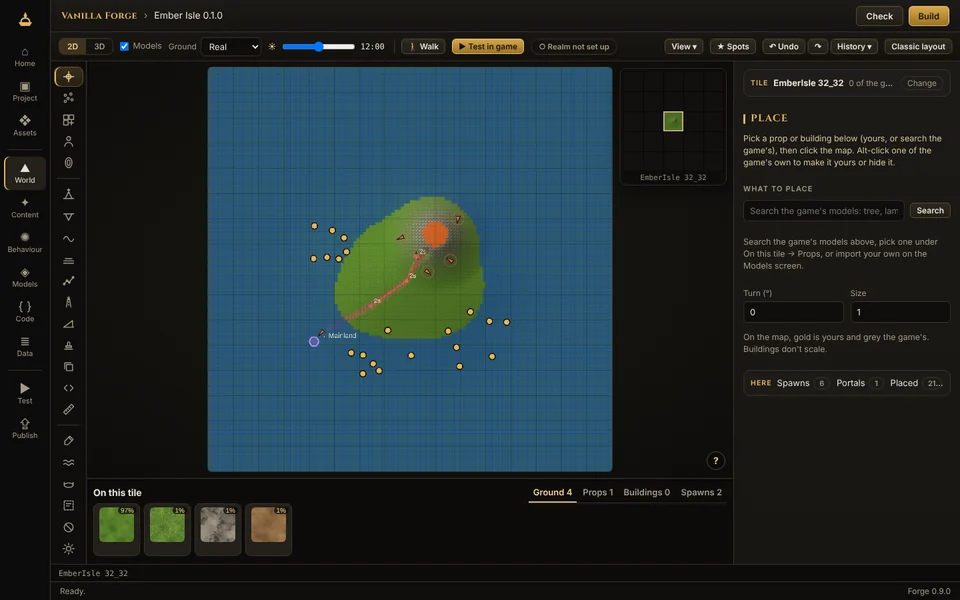
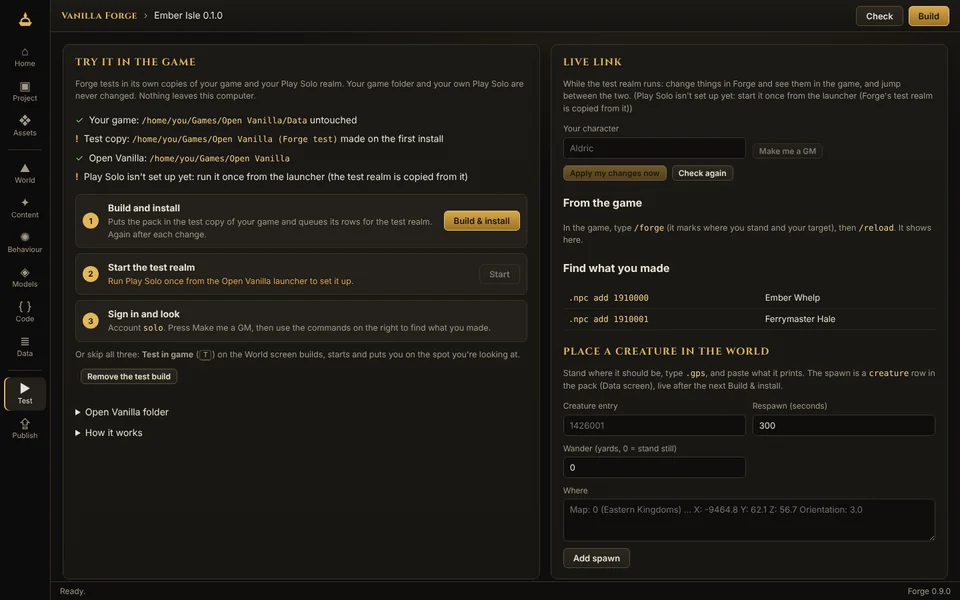
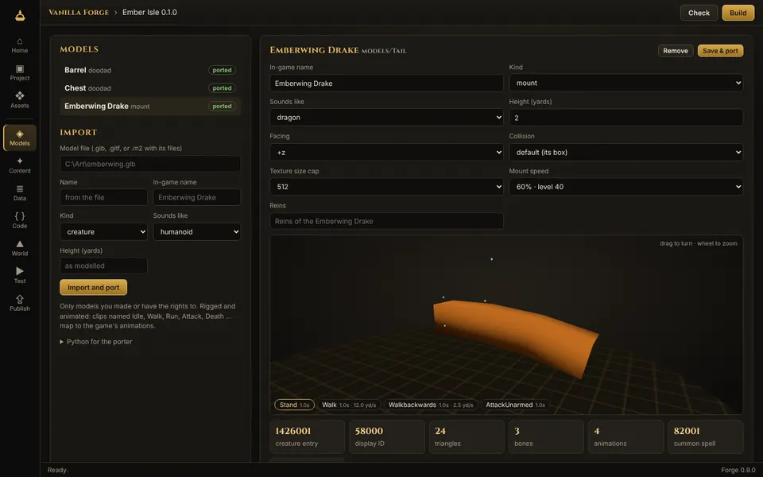
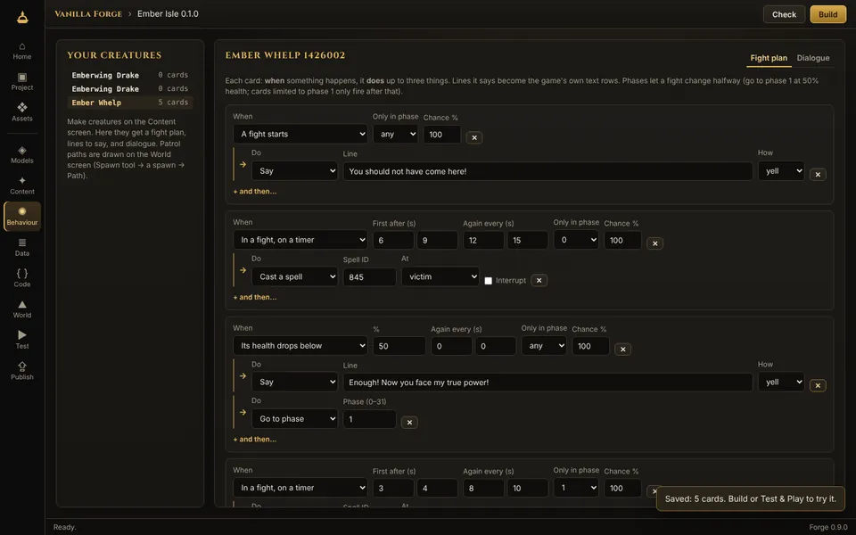

Vanilla Forge
The Open Vanilla creator app. Shape the world, bring your own models, write creatures, quests, items and addons, walk them in game in one click, and publish them as a pack a realm can install. One app instead of a shelf of modding tools: no hex editing, no copying files by hand, and nothing from Blizzard inside. Forge works from the game client you already have, and tests in a copy of it, so your game is never changed.

What you can make
A full world editor, in 2D or 3D: raise hills, dig valleys, lay ramps, press shapes into the ground, paint it with the game's own textures, pour lakes, rivers and magma, set the sky and fog at any hour. Place the game's trees, props and buildings or your own models, creatures and portals, or start a whole new map.
A .glb from Blender or any 3D tool becomes a creature, a mount (with its summon spell and reins) or a prop you can walk into and stand on. You see it in 3D, animated, the way the game will.
Short forms instead of database tables: a creature's look, level and loot; a quest's story, kills, items and rewards; an item's stats and price; a vendor's list. Every other realm and client table is there as rows when you need it.
A fight plan as cards: when its health drops below half, yell a line and go to phase two; every eight seconds, cast at a random target. Dialogue pages with choices, and patrol paths drawn on the map. Forge writes the server's tables for you.
Drop in as a character and walk your world in Forge. Press “Test in game” and Forge builds your pack, starts a test realm and puts you on the spot you were looking at. Change something while you play and apply it without restarting; type /forge in the game to show where you stand.
A code editor with a Lua 5.0 check that catches what the game client can't run, and a pretend client to run your addon in: slash commands, clicks, events and a console, before you ever start the game.




The picture at the top is Forge showing a game client's own ground, trees and buildings in 3D, the way you will see your game. The smaller pictures are from the sample island on a made-up test game with our own textures.
Getting started
- Install Forge. Run
VanillaForge-Setup-<version>.exe. It carries everything it needs, Python for the Model Porter included. - Point it at your game. If you use the Open Vanilla launcher, Forge finds your game folder by itself. Otherwise press Browse on Home and pick your game folder (the one with
Datain it). - Make a project. New here? Press Make the sample island on Home: Forge builds Ember Isle for you, with every tool used, to change and play. Or choose New project: a content pack (world, models, creatures, quests), an addon, or empty. Projects live in
Documents\Vanilla Forge. - Make something. Open World and type a map and tile, or paste what
.gpsprints in game, then pick a tool. The first time, a short tour shows you round the editor. Or start on Models, Content or Code. Check (top right) tells you what still needs fixing, in plain words. - Test & Play. Press Test in game (or T). Forge builds your pack into a test copy of your game and your own test server, made from your Play Solo, starts it and puts you on the spot you were looking at. It all runs on your PC: set up your test server once.
- Publish. Publish makes a signed
.ovpackfor a realm to review and install. Addons can go straight to the Workshop; for content packs, talk to realm staff on Discord.
World tools
| Raise, Lower, Smooth, Flatten | Hold the mouse to keep shaping, across chunk and tile edges without cracks. Brushes have a falloff and an inner radius. |
| Points | Brush over the ground to pick its points, then raise, lower, level, smooth or lay a plane through just those, with a soft edge. |
| Ramp, Stamp | A straight, soft-edged slope from foot to top. Press a shape into the ground: crater, mesa, ridges, dunes, spire, or any greyscale picture of yours. |
| Paint | Any of the game's ground textures, picked by sight, with a soft brush or in specks; swap one texture for another across a tile or a whole map. |
| Holes, Impass | Cut or fill 8-yard holes for cave mouths and cellars; mark ground players can't walk onto. |
| Area | Find or make a zone and paint it: its name, level, music and PvP rules. |
| Water | Lakes, sea, magma or slime: level, angled for rivers and falls, or cropped wherever the ground stands above it. |
| Light | Slide the time of day to see the game's own sky, sun and fog at any hour; change a light's colours or add your own. |
| Place | The game's props and buildings or your own models: move, turn, lean and size with handles, many at once. Buildings come furnished, and everything you place is solid on the server. Alt-click one of the game's own to make it yours or hide it. |
| Spawn, Portal, Paths | Creatures and objects with facing, respawn and wander; portals between any two spots; patrols drawn on the map, with waits. |
| Scatter, Road, Prefab | Paint trees and rocks with rules (how many, how far apart, no steeper than); smooth and paint a road along a line; save a group of props and spawns and stamp it anywhere. |
| Copy | Copy a block of ground (shape, textures, water, holes) and paste it anywhere, on any map, turned or mirrored. |
| Script | Your own brushes in a few lines of JavaScript: terraces, crater fields, a forest on the slopes. Save them in your pack to share. |
| Measure, Spots | How far, how high and how steep between two points, and how long on foot. Name a place and its view, and go back in one click. |
| 3D view | The game's real ground, trees, props and buildings, with their animations, fires and glows; the tiles around and a far ring to the horizon. View sets Fast, Balanced or Beautiful. |
| Walk | Drop in as a character and walk your world: run, jump, swim, on into the next tile. |
| Heightmaps, New map | Your ground out as a 16-bit picture and back in from any terrain tool; a blank map of 1 to 4 tiles a side, as a zone, dungeon or raid. |
| Undo, History | Ctrl+Z, or go back to any step in the list. Ctrl+K goes anywhere, and ? shows every key. |
Forge was checked against 41 real tiles of Azeroth and Kalimdor: a tile you don't touch comes back byte for byte, and one you edit keeps every stock tree and building, with its ground, water, lighting, minimap and server map written the way the game's own are.
Good to know
- Early access. Forge works, but it is new. Keep your projects backed up (they are ordinary folders, so any backup or Git works) and tell us what breaks.
- Your own server, never ours. Testing runs on your PC only, on your own test server, and never connects to Open Vanilla's realms. To play your work with friends, host it on your own server.
- Your game is never changed. Forge tests in its own copies of your game and Play Solo, and your edits stay yours until a realm installs your pack. An older Forge's test files left in your real folders are taken out when you press Clean up on the Test screen.
- A fast PC helps in 3D. If the 3D view runs slow, View on the toolbar has a Fast setting; 2D works on anything.
- Solid on the server too. Ground, water, holes and zones reach the server's maps, and the buildings and props you place get the server's collision: in the test realm when you test, and in the realm's build. Players can't walk through your walls, and spells and creatures can't see through them. Creatures find their way round a new building once the realm rebuilds its movement maps (Forge lists which).
- Only what you have the rights to. Your own models and art, or ones with a licence that lets you share them, with a credit for each. Forge refuses to publish files copied from the game, and models converted from the game's own.
- Nothing from Blizzard is in Forge and it never downloads game files. It reads the client you already have.
Questions
Is it free?
Yes, and open source, like the rest of Open Vanilla. Nothing that affects play is ever sold.
Do I need to know how to code?
No. The World, Models and Content screens are tools and forms. Code is there for addons, and the Data screen for anyone who wants every table, but you never have to touch either.
Which game client do I need?
The same Vanilla client you play Open Vanilla with. Don't have one? The client guide shows where to get it.
Will my edits show up for other players?
Only once a realm installs your pack, on its own servers. Until then they are on your PC: in your project, and in your own test server while you test. To play them with friends sooner, host your own server.
How do I see my new map in game?
Open it on the World screen and press Test in game: you arrive on the spot you were looking at. Or type .tele and your map's name in the test realm; Forge makes that teleport spot for every new map.
What 3D files can I import?
.glb or .gltf, from Blender or any modern 3D tool. Rigged and animated models work: name the clips Idle, Walk, Run, Attack, Death and so on, and they map to the game's animations. Big models are simplified to fit the game client.
Can my own AI assistant help me build?
Yes, if you want it to. Forge comes with forge.exe mcp, a connection any AI assistant that takes MCP servers can use: it works on your project through the same tools you do (shape the ground, make a creature, write its fight plan), on your PC. Home shows the exact command. Nothing is hosted by Open Vanilla and no AI is built in. See Use your own AI.
Mac or Linux?
The download is Windows only for now. Forge is open source, so it can be built from the forge folder of the Open Vanilla repository on other systems, but Test & Play expects the Windows client and Play Solo.
Something went wrong.
Press Check first: it says what's missing in plain words. If that doesn't help, post in the Open Vanilla Discord's #bug-reports with what you did and what Forge said.